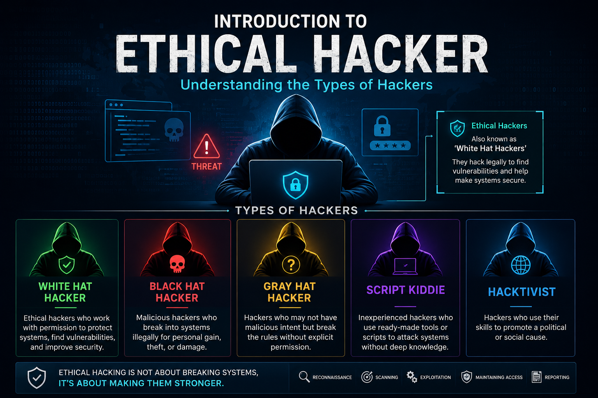

> Introduction to Ethical Hacking in Hindi: Types of Hackers & Hacker Teams!
नमस्ते दोस्तों! मैं प्रशांत (Ghost) एक बार फिर हाज़िर हूँ 'Ghost Protocol' के एक नए चैप्टर के साथ। पिछली पोस्ट में मैंने आपको बताया था कि कैसे पॉलिटेक्निक (मैकेनिकल) में मिली असफलताओं के बाद मैंने कंप्यूटर की दुनिया में कदम रखा और साइबर सिक्योरिटी मेरा असली जुनून बन गया। आज हम उसी जुनून की पहली सीढ़ी चढ़ने वाले हैं。
जब भी हम 'हैकिंग' शब्द सुनते हैं, तो हमारे दिमाग में एक ऐसे इंसान की तस्वीर आती है जो डार्क रूम में बैठकर हुडी (Hoodie) पहने धड़ाधड़ कीबोर्ड चला रहा है और किसी का बैंक अकाउंट खाली कर रहा है। लेकिन असलियत इससे बहुत अलग है। आज मैं आपको बताऊंगा कि Ethical Hacking क्या होती है, हैकर्स कितने प्रकार के होते हैं, और कॉर्पोरेट दुनिया में हैकिंग की कौन-कौन सी टीमें काम करती हैं।
> चलिए, सिस्टम को समझना शुरू करते हैं!
> 01. हैकर कितने प्रकार के होते हैं? (Types of Hackers)
हैकिंग का सीधा सा मतलब है—किसी सिस्टम की कमियों (vulnerabilities) को ढूंढना। अब वो कमियां आप किस नीयत से ढूंढ रहे हैं, उस आधार पर हैकर्स को अलग-अलग 'हैट्स' (Hats) में बांटा गया है:

ये वो हैकर्स हैं जो फिल्मों में विलेन होते हैं। इनका मकसद सिस्टम को नुकसान पहुंचाना, डेटा चोरी करना या पैसों के लिए ब्लैकमेल करना होता है। ये बिना परमिशन के हैकिंग करते हैं जो कि गैर-कानूनी (Illegal) है। (इन्हें कोडिंग की गहरी समझ होती है, वायरस/मैलवेयर बनाते हैं और नेटवर्क बायपास करने में मास्टर होते हैं।)


हम सब इसी कैटेगरी में आना चाहते हैं! व्हाइट हैट हैकर भी बिल्कुल ब्लैक हैट हैकर की तरह ही सिस्टम को हैक कर सकते हैं, लेकिन अंतर सिर्फ परमिशन का है। कंपनियां खुद इन्हें हायर करती हैं कि "भाई, हमारा सिस्टम हैक करके दिखाओ, ताकि हमें अपनी कमियां पता चलें।"
- नेटवर्किंग: (TCP/IP, OSI Model) - डेटा इंटरनेट पर कैसे ट्रैवल करता है।
- ऑपरेटिंग सिस्टम: Linux (विशेष रूप से Kali Linux) और Windows की गहरी समझ।
- टूल्स: Burp Suite, Nmap, Metasploit आदि चलाना।
- प्रोग्रामिंग: Python, JavaScript, HTML, PHP
- 3. Grey Hat Hacker (बीच वाले): ये न तो पूरी तरह अच्छे होते हैं, न बुरे। ये बिना परमिशन के सिस्टम की कमियां ढूंढते हैं, लेकिन नुकसान पहुंचाने के लिए नहीं। कमी मिलने पर ये कंपनी को बता देते हैं और कभी-कभी उसके बदले 'Bounty' (इनाम) की मांग करते हैं।
- 4. Script Kiddies (कॉपी-पेस्ट वाले): हमें यह बिल्कुल नहीं बनना है! ये वो लोग हैं जिन्हें कोडिंग या हैकिंग के पीछे का लॉजिक नहीं पता होता। ये बस इंटरनेट से दूसरों के बनाए हुए टूल्स डाउनलोड करते हैं और किसी का वाई-फाई या फेसबुक हैक करने की कोशिश करते हैं। इनमें खुद की कोई स्किल नहीं होती।
- 5. Green Hat Hacker (सीखने वाले): ये हैकिंग की दुनिया के नए खिलाड़ी होते हैं, जिन्हें सीखने की बहुत भूख होती है। ये सवाल पूछते हैं, बेसिक्स क्लियर करते हैं और स्क्रिप्ट किडीज़ की तरह शॉर्टकट नहीं खोजते।
> 02. हैकिंग की टीमें (Types of Hacker Teams / Color Teams)
जब आप साइबर सिक्योरिटी को एक करियर के रूप में देखते हैं, तो बड़ी कंपनियों में सिक्योरिटी का काम अलग-अलग टीमों में बंटा होता है:

- 🔴 Red Team (हमलावर - The Attackers): रेड टीम का काम होता है एक असली 'ब्लैक हैट हैकर' की तरह सोचना और कंपनी के सिस्टम पर हमला करना। ये हर वो तरीका अपनाते हैं जिससे सिस्टम को तोड़ा जा सके (बिल्कुल परमिशन के साथ)। इनका मुख्य काम कंपनी के डिफेंस को टेस्ट करना होता है।
- 🔵 Blue Team (रक्षक - The Defenders): अगर रेड टीम हमलावर है, तो ब्लू टीम शील्ड (Shield) है। ब्लू टीम का काम है रेड टीम (या असली हैकर्स) के हमलों को रोकना। ये लोग 24/7 नेटवर्क की निगरानी करते हैं, फायरवॉल सेट करते हैं, और अगर कोई हैकिंग की कोशिश हो रही हो, तो उसे ब्लॉक करते हैं।
- 🟣 Purple Team (पुल - The Bridge): यह कोई अलग से टीम नहीं है, बल्कि रेड और ब्लू टीम का कॉम्बिनेशन है। जब रेड टीम हमला करती है और ब्लू टीम रोकती है, तो पर्पल टीम का काम होता है दोनों के बीच तालमेल बैठाना ताकि कंपनी की ओवरऑल सिक्योरिटी मजबूत हो सके।
> 03. तो मैं (प्रशांत) किस कैटेगरी और टीम में आता हूँ?
अगर मैं आज की बात करूँ, तो मैं एक Green Hat Hacker हूँ—यानी एक लर्नर, जो अभी एथिकल हैकिंग के बेसिक्स सीख रहा है और अपने 'Ghost Protocol' रोडमैप पर चल रहा है。
लेकिन मेरी मंज़िल क्या है? मुझे कमियां ढूंढना, सिस्टम्स को टेस्ट करना और Kali Linux या Burp Suite जैसे टूल्स के साथ काम करना सबसे ज्यादा अट्रैक्ट करता है। इसलिए, मेरा लक्ष्य Red Team (Offensive Security) में जाने का है। मैं एक ऐसा एथिकल हैकर (White Hat) बनना चाहता हूँ, जो कंपनियों के सिस्टम में मौजूद कमियों को हैकर्स से पहले ढूंढ निकाले।
> 04. 💡 BONUS_PROTOCOL // हैकिंग 20% टूल्स है और 80% माइंडसेट!
एक चीज़ जो मैंने अब तक की जर्नी में सीखी है—टूल्स (जैसे Burp Suite या Nmap) तो कोई भी चलाना सीख सकता है, लेकिन असली हैकर वो है जो "आउट ऑफ द बॉक्स" सोचता है। अगर आपको साइबर सिक्योरिटी में आना है, तो आपके अंदर कूट-कूट कर 'धैर्य' (Patience) होना चाहिए। कई बार एक छोटी सी कमी ढूंढने में हफ्तों लग जाते हैं। कभी हार न मानने वाला माइंडसेट ही आपको एक स्क्रिप्ट किडी से असली हैकर बनाता है।
आप लोग क्या सोचते हैं? आपको रेड टीम का काम ज्यादा रोमांचक लगा या ब्लू टीम का? कमेंट्स में ज़रूर बताना!
जल्द ही मिलते हैं 'Ghost Protocol' के अगले चैप्टर में, जहाँ हम बात करेंगे कुछ प्रैक्टिकल टूल्स और नेटवर्किंग के बेसिक्स के बारे में।